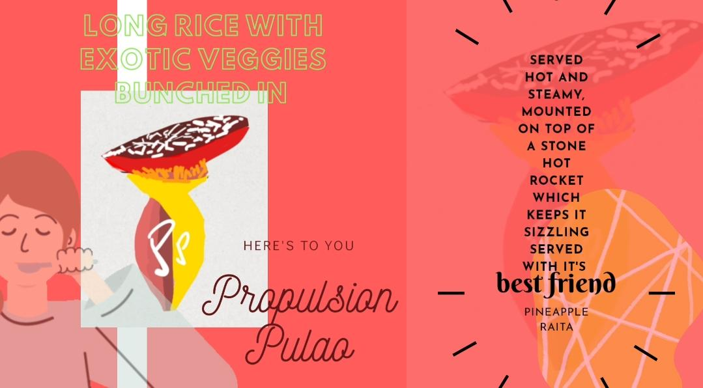

Propulsion Pulao
Propulsion Pulao is mounted on a stone hot sizzling plate which keeps the rice sizzling too!
In this recipe, assortment of spices, veggies and rice are first sauteed in oil and ghee and then cooked in a pressure cooker.
It comes with its best friend 'the raita' to enhance the taste of the pulao!

HOME